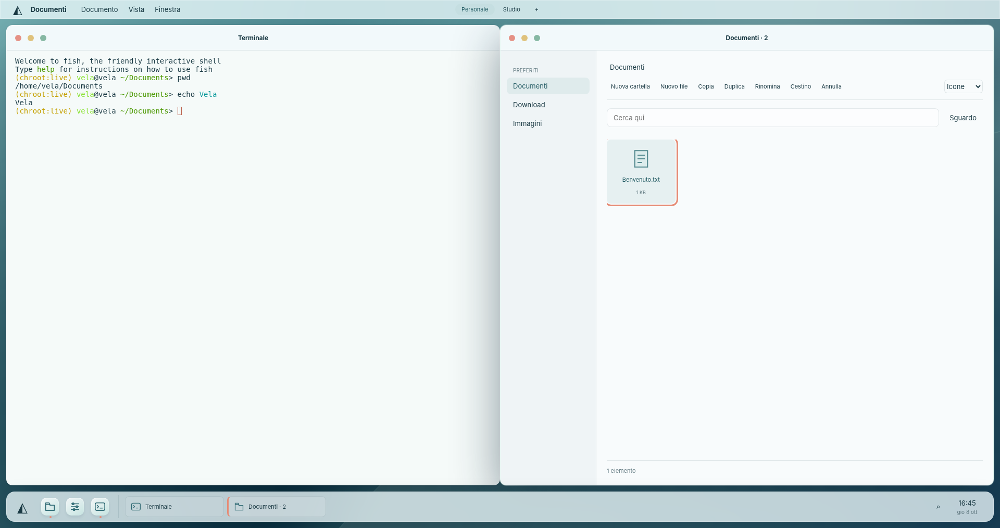
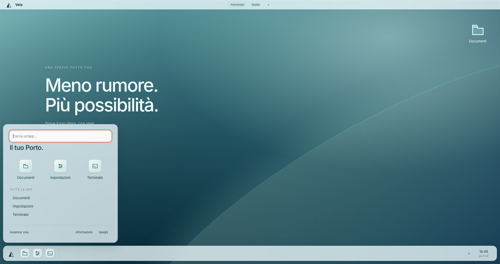
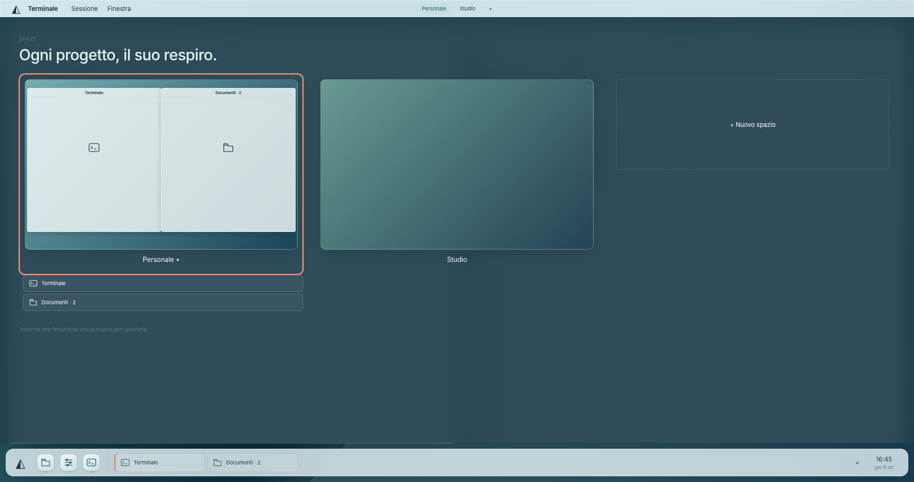
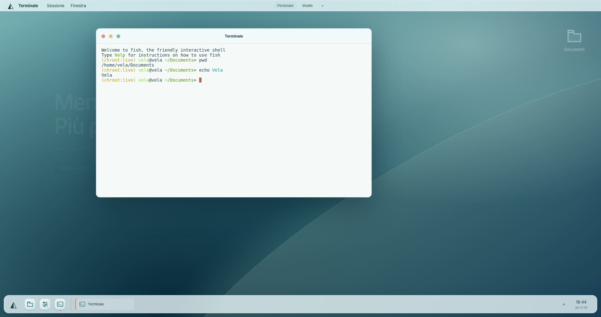

Meno rumore.
Più possibilità.
Le tue app, le tue finestre, il tuo ritmo. La nuova Banchina riunisce il lavoro in una scrivania originale, con una firma di mare e corallo.

Una prova per firmware, 4 GB RAM e 2 CPU, VirtualBox 7.2.20. Tempi dal kernel alla shell, firmware escluso. Nessun modello IA caricato. 60 fps e risposta sotto 100 ms non ancora certificati.
Questa è una sessione live: al riavvio perde i dati. Installer e home persistente non sono ancora disponibili. Gli spegnimenti BIOS ed EFI sono riusciti senza forzare la VM.
Un solo posto per il lavoro.

Un Porto senza promesse vuote.
App disponibili, ricerca semplice e alimentazione a portata di mano. Le funzioni non collegate restano fuori.

Ogni progetto, il suo respiro.
Scrivanie distinte, scorciatoie e finestre da spostare. Le miniature sono ridisegnate dalla geometria; gli spazi sono ancora di sessione.

Il terminale trova casa.
Una sessione Linux reale nello stesso stile della shell. Niente seconda decorazione che interrompe il lavoro.
Prima dell’uso quotidiano.
- Installer, password personale e documenti persistenti.
- Browser, rete e audio integrati.
- Compositore Wayland, snapshot e accessibilità di sistema.
- Prestazioni e build riproducibili con misure ripetute.